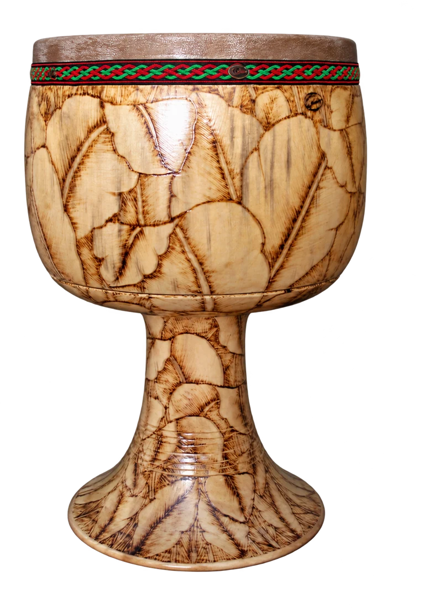

جایی برای تمرین
با سرعتی تمرین کن که کیفیت ضربه حفظ شود. ارتفاع و تکیهگاه ساز، آزادبودن مچ و نظم تمرین را با استاد بررسی کن.
زبان ظریفِ ضربهها
تنبک یک ساز کوبهای پوستی با بدنه جامشکل است. با بخشهای مختلف انگشتان و دست، روی پوست صداهای متفاوت تولید میشود. کنترل ظریف ضربه، ریز و جملههای ریتمیک، جای مهمی در موسیقی ایرانی دارد.

محل و شیوه ضربه، تفاوت صداهای بم و روشن را شکل میدهد. تنبک علاوه بر نگهداشتن ضرب، امکان جملهبندی و بیان ریتمیک دارد.
انتخاب ساز از علاقه و تجربه آغاز میشود. برای تصمیم نهایی، ساز را از نزدیک امتحان کن و با مدرس دربارهٔ شرایط تمرینت حرف بزن.
ترتیب و سرعت آموزش با تجربه، تمرین و برنامهٔ استاد تنظیم میشود.
با سرعتی تمرین کن که کیفیت ضربه حفظ شود. ارتفاع و تکیهگاه ساز، آزادبودن مچ و نظم تمرین را با استاد بررسی کن.
سلامت پوست و بدنه، اندازه دهانه، وزن و یکنواختی طنین را بررسی کن. اندازه بزرگتر الزاماً برای شروع بهتر نیست.
پیش از خرید ساز، نظر استاد را بپرس.هر دو میتوانند بدنه جامشکل داشته باشند، اما ساختمان و زبان تکنیکی آنها متفاوت است.
آموزش عملی و شناخت ریتم در کنار هم پیش میروند؛ لازم نیست پیشاپیش نت بلد باشی.
با هزارآوا علاقههایت را مرور کن و تجربهٔ ریتم و شنوایی را امتحان کن.
آشنایی با هزارآوا ✦عکس: User:Hamid thb1 · تصویر اصلی · Public domain · نسخهٔ بهینهشده و بدون پسزمینه.